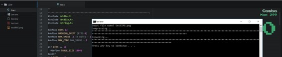

Why do we need Compression Algorithm ?
There are two categories of compression techniques, lossy and lossless. Whilst each uses different techniques to compress files, both have the same aim: To look for duplicate data in the graphic (GIF for LZW) and use a much more compact data representation. Lossless compression reduces bits by identifying and eliminating statistical redundancy. No information is lost in lossless compression.On the other hand, Lossy compression reduces bits by removing unnecessary or less important information. So we need Data Compression mainly because:
- Uncompressed data can take up a lot of space, which is not good for limited hard drive space and internet download speeds.
- While hardware gets better and cheaper, algorithms to reduce data size also helps technology evolve.
- Example: One minute of uncompressed HD video can be over 1 GB.How can we fit a two-hour film on a 25 GB Blu-ray disc?
Lossy compression methods include DCT (Discreet Cosine Transform), Vector Quantisation and Huffman coding while Lossless compression methods include RLE (Run Length Encoding), string-table compression, LZW (Lempel Ziff Welch) and zlib.There Exist several compression Algorithms, but we are concentrating on LZW.
What is Lempel–Ziv–Welch (LZW) Algorithm ?
The LZW algorithm is a very common compression technique. This algorithm is typically used in GIF and optionally in PDF and TIFF. Unix’s ‘compress’ command, among other uses. It is lossless, meaning no data is lost when compressing. The algorithm is simple to implement and has the potential for very high throughput in hardware implementations. It is the algorithm of the widely used Unix file compression utility compress, and is used in the GIF image format.
The Idea relies on reoccurring patterns to save data space. LZW is the foremost technique for general purpose data compression due to its simplicity and versatility. It is the basis of many PC utilities that claim to “double the capacity of your hard drive”.
How does it work?
LZW compression works by reading a sequence of symbols, grouping the symbols into strings, and converting the strings into codes. Because the codes take up less space than the strings they replace, we get compression.Characteristic features of LZW includes,
- LZW compression uses a code table, with 4096 as a common choice for the number of table entries. Codes 0-255 in the code table are always assigned to represent single bytes from the input file.
- When encoding begins the code table contains only the first 256 entries, with the remainder of the table being blanks. Compression is achieved by using codes 256 through 4095 to represent sequences of bytes.
- As the encoding continues, LZW identifies repeated sequences in the data, and adds them to the code table.
- Decoding is achieved by taking each code from the compressed file and translating it through the code table to find what character or characters it represents.
Example: ASCII code.Typically, every character is stored with 8 binary bits, allowing up to 256 unique symbols for the data. This algorithm tries to extend the library to 9 to 12 bits per character.The new unique symbols are made up of combinations of symbols that occurred previously in the string. It does not always compress well, especially with short, diverse strings. But is good for compressing redundant data, and does not have to save the new dictionary with the data: this method can both compress and uncompress data.
There are excellent article’s written up already, you can look more indepth here and also Mark Nelson’s article is commendable.
Implementation
The idea of the compression algorithm is the following: as the input data is being processed, a dictionary keeps a correspondence between the longest encountered words and a list of code values. The words are replaced by their corresponding codes and so the input file is compressed. Therefore, the efficiency of the algorithm increases as the number of long, repetitive words in the input data increases.
LZW ENCODING
* PSEUDOCODE 1 Initialize table with single character strings 2 P = first input character 3 WHILE not end of input stream 4 C = next input character 5 IF P + C is in the string table 6 P = P + C 7 ELSE 8 output the code for P 9 add P + C to the string table 10 P = C 11 END WHILE 12 output code for P
Testing the code below :
Output :

Also check the code converted by Mark Nelson into C++ style.There is another variation of 6 different versions here. Also, Rosettacode lists several implementations of LZW in different languages.
{kind=link}
{kind=link}
Compression using LZW
Example 1: Use the LZW algorithm to compress the string: BABAABAAA
The steps involved are systematically shown in the diagram below.

LZW Decompression
The LZW decompressor creates the same string table during decompression. It starts with the first 256 table entries initialized to single characters.The string table is updated for each character in the input stream, except the first one.Decoding achieved by reading codes and translating them through the code table being built.
LZW Decompression Algorithm
* PSEUDOCODE 1 Initialize table with single character strings 2 OLD = first input code 3 output translation of OLD 4 WHILE not end of input stream 5 NEW = next input code 6 IF NEW is not in the string table 7 S = translation of OLD 8 S = S + C 9 ELSE 10 S = translation of NEW 11 output S 12 C = first character of S 13 OLD + C to the string table 14 OLD = NEW 15 END WHILE
Example 2: LZW Decompression: Use LZW to decompress the output sequence of : <66><65><256><257><65><260>
The steps involved are systematically shown in the diagram below.

In this example, 72 bits are represented with 72 bits of data. After a reasonable string table is built, compression improves dramatically.
LZW Summary: This algorithm compresses repetitive sequences of data very well. Since the codewords are 12 bits, any single encoded character will expand the data size rather than reduce it.
Advantages of LZW over Huffman:
- LZW requires no prior information about the input data stream.
- LZW can compress the input stream in one single pass.
- Another advantage of LZW its simplicity, allowing fast execution.
Resources:
- mit.edu
- Dave.Marshall
- duke.edu
- michael.dipperstein
- LZW(Youtube)
- faculty.kfupm.edu.sa
- github repository(kmeelu)